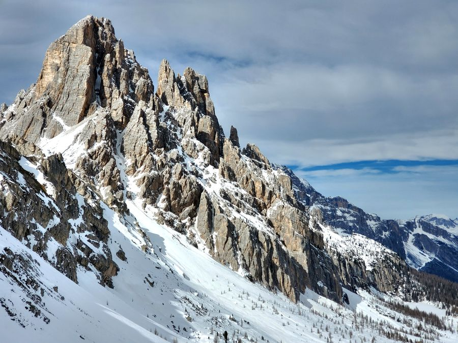
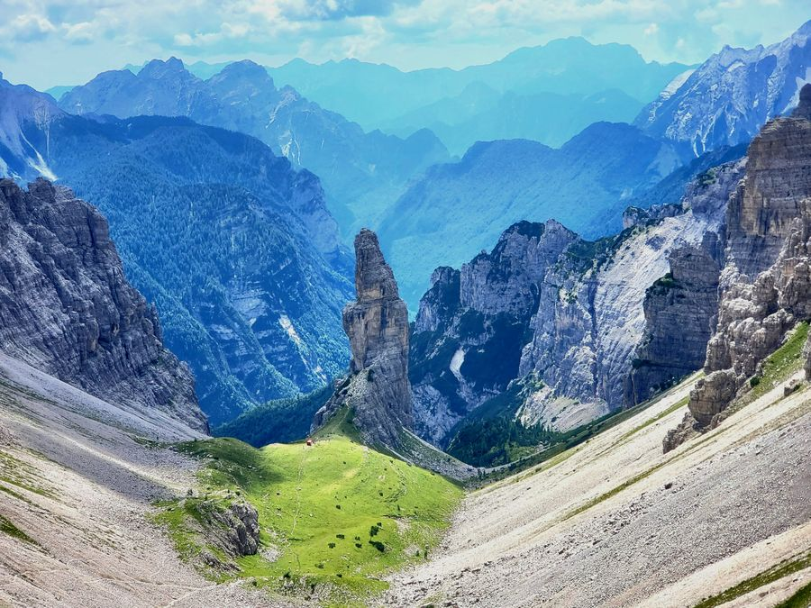
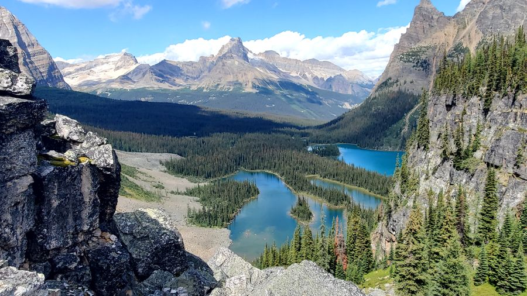

1 stage
Val di Zoldo - Hike above Città di Fiume
moderateA wintery day hike with wonderful views of the Dolomites
Open hikeThe catalog
Browse the complete collection of published routes, from short day hikes to multi-stage adventures.

1 stage
A wintery day hike with wonderful views of the Dolomites
Open hike
4 stages
A rugged 4-day loop around the wild dolomites of the Friuli-Venezia-Giulia region.
Open hike
5 stages
A rugged 5-day backpacking loop through Killarney Provincial Park, known for its white quartzite ridges, clear lakes, and dense boreal forest.
Open hike
1 stage
A stunning day hike loop around Lake O'Hara with two epic ascents.
Open hike
1 stage
A day hike up to the rocky amphitheatre above Piancavallo
Open hike